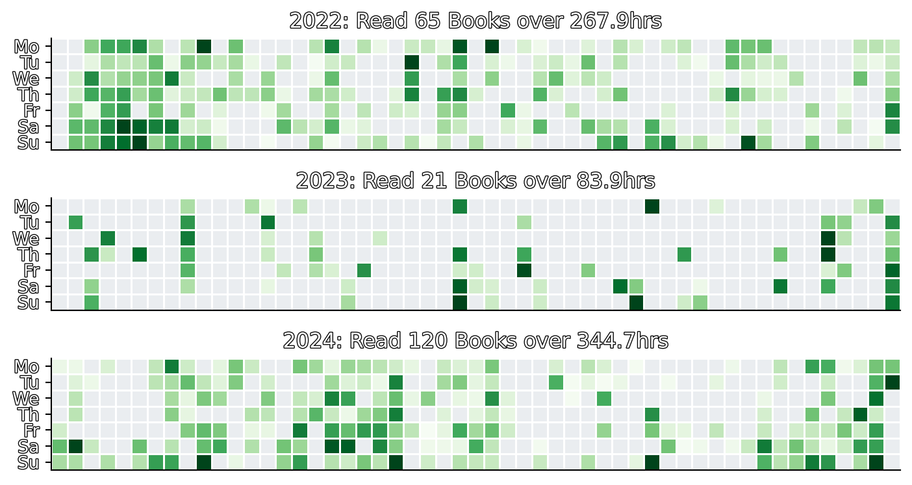
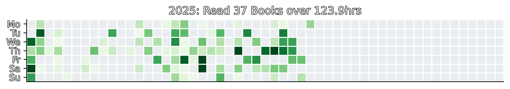

Reading Journey
Reading journey and notes about books
Summary of Reading

| Title | Started | Ended |
|---|---|---|
| 80000 Hours | 2022-12-09T14:04:29Z | 2022-12-14T13:40:58Z |
| A Mind For Numbers | 2024-07-12T19:37:38Z | 2024-07-14T17:20:46Z |
| AI and Machine Learning for Coders | 2022-09-05T13:33:00Z | 2022-09-25T17:29:42Z |
| Acoustic and Auditory Phonetics | 2024-03-19T06:46:01Z | 2024-04-05T17:24:07Z |
| Algorithms to Live By | 2023-01-15T16:42:04Z | 2023-04-21T13:22:41Z |
| An Immense World | 2024-08-30T05:49:25Z | 2024-09-19T20:48:56Z |
| Animorphs #10: The Android | 2024-11-16T20:34:55Z | 2024-11-16T21:49:07Z |
| Animorphs #11: The Forgotten | 2024-11-17T17:41:00Z | 2024-11-17T19:42:56Z |
| Animorphs #12: The Reaction | 2024-11-22T21:05:55Z | 2024-11-22T22:02:38Z |
| Animorphs #13.5: The Andalite Chronicles | 2024-11-23T13:10:31Z | 2024-11-24T15:15:57Z |
| Animorphs #13: The Change | 2024-11-23T15:16:10Z | 2024-11-23T16:38:08Z |
| Animorphs #14: The Unknown | 2024-11-25T06:04:46Z | 2024-11-25T07:01:37Z |
| Animorphs #15: The Escape | 2024-11-28T06:02:51Z | 2024-11-28T07:18:21Z |
| Animorphs #16: The Warning | 2024-11-28T21:09:09Z | 2024-11-28T23:24:25Z |
| Animorphs #17: The Underground | 2024-11-29T08:28:51Z | 2024-11-29T20:40:50Z |
| Animorphs #18.5: Megamorphs #2 - In the Time of Dinosaurs | 2024-12-01T19:01:44Z | 2024-12-01T20:32:42Z |
| Animorphs #18: The Decision | 2024-11-30T07:33:14Z | 2024-11-30T09:05:19Z |
| Animorphs #19: The Departure | 2024-12-03T20:07:53Z | 2024-12-03T23:31:01Z |
| Animorphs #20: The Discovery | 2024-12-04T16:16:01Z | 2024-12-04T21:00:38Z |
| Animorphs #21: The Threat | 2024-12-04T22:27:36Z | 2024-12-04T23:47:15Z |
| Animorphs #22.5: The Hork-Bajir Chronicles | 2024-12-08T02:18:27Z | 2024-12-08T17:15:21Z |
| Animorphs #22: The Solution | 2024-12-06T20:18:45Z | 2024-12-06T21:29:24Z |
| Animorphs #23: The Pretender | 2024-12-08T22:29:34Z | 2024-12-08T23:44:06Z |
| Animorphs #24: The Suspicion | 2024-12-12T20:57:56Z | 2024-12-12T22:08:56Z |
| Animorphs #25: The Extreme | 2024-12-13T20:43:19Z | 2024-12-13T21:45:37Z |
| Animorphs #26: The Attack | 2024-12-13T21:55:39Z | 2024-12-13T23:37:25Z |
| Animorphs: #01 The Invasion | 2024-11-02T13:35:03Z | 2024-11-02T18:07:15Z |
| Animorphs: #02 The Visitor | 2024-11-06T20:36:39Z | 2024-11-07T17:23:52Z |
| Animorphs: #03 The Encounter | 2024-11-08T19:49:07Z | 2024-11-08T21:17:26Z |
| Animorphs: #04 The Message | 2024-11-09T07:32:55Z | 2024-11-09T08:35:57Z |
| Animorphs: #05 The Predator | 2024-11-09T10:10:18Z | 2024-11-09T11:07:36Z |
| Animorphs: #06 The Capture | 2024-11-09T16:43:07Z | 2024-11-09T17:54:23Z |
| Animorphs: #07 The Stranger | 2024-11-10T07:45:57Z | 2024-11-10T09:11:24Z |
| Animorphs: #07.5 Megamorphs #1 - The Andalite’s Gift | 2024-11-11T19:40:09Z | 2024-11-11T20:58:16Z |
| Animorphs: #08 The Alien | 2024-11-10T21:08:53Z | 2024-11-10T22:27:11Z |
| Animorphs: #09 The Secret | 2024-11-12T16:19:57Z | 2024-11-12T17:43:08Z |
| Anthropocene Reviewed | 2022-06-20T06:32:41Z | 2022-06-21T10:38:07Z |
| Applied Natural Language Processing in the Enterprise | 2022-10-31T20:54:43Z | 2022-11-06T20:03:02Z |
| Architecture Patterns with Python | 2022-06-02T20:09:27Z | 2022-06-18T17:58:45Z |
| Arrival (Stories of Your Life MTI) | 2023-11-30T13:22:25Z | 2023-12-08T09:34:14Z |
| Bitwise | 2024-09-22T04:26:01Z | 2024-09-22T07:32:32Z |
| Blueprints for Text Analysis Using Python | 2022-12-24T21:58:48Z | 2022-12-30T20:31:23Z |
| Building Machine Learning Pipelines | 2022-01-10T08:40:45Z | 2022-01-10T14:17:59Z |
| Building Machine Learning Powered Applications | 2022-01-23T15:17:02Z | 2022-01-29T13:29:31Z |
| Building Serverless Applications with Google Cloud Run | 2022-03-01T15:26:37Z | 2022-03-06T13:54:34Z |
| Building an Anonymization Pipeline | 2023-03-29T20:07:14Z | 2023-12-31T22:23:42Z |
| Changeable | 2024-09-22T09:11:49Z | 2024-09-22T18:36:02Z |
| Children of Dune | 2024-06-07T21:02:32Z | 2024-06-30T13:46:00Z |
| Cracking the Coding Interview | 2022-04-19T21:36:44Z | 2022-04-27T15:59:06Z |
| Dark Matter | 2024-07-01T21:27:22Z | 2024-07-05T20:28:26Z |
| Data Pipelines Pocket Reference | 2022-02-20T21:14:14Z | 2022-02-23T21:24:55Z |
| Data Pipelines with Apache Airflow | 2022-01-22T17:55:01Z | 2022-01-27T22:23:53Z |
| Data Science at the Command Line | 2022-02-09T19:47:39Z | 2022-02-11T16:03:12Z |
| Data Science from Scratch | 2022-10-17T20:06:10Z | 2022-10-20T15:58:42Z |
| Data Science on AWS | 2022-08-10T19:58:09Z | 2022-09-27T19:33:00Z |
| Data Science on the Google Cloud Platform, 1st Edition | 2022-02-24T15:48:40Z | 2022-02-28T14:42:20Z |
| Death’s End | 2024-03-01T10:52:22Z | 2024-03-10T15:02:39Z |
| Deep Learning for Coders with fastai & PyTorch | 2022-10-17T21:07:50Z | 2022-10-31T20:25:33Z |
| Deep Learning from Scratch | 2022-05-01T20:52:30Z | 2022-05-09T16:29:56Z |
| Deep Learning with Python (2nd edition) | 2022-01-05T19:10:46Z | 2022-01-13T20:40:07Z |
| Designing Autonomous AI | 2022-10-27T19:33:21Z | 2022-10-30T17:56:09Z |
| Designing Machine Learning Systems | 2022-06-19T08:15:05Z | 2022-07-04T22:04:50Z |
| Disability Visibility | 2024-03-11T20:49:04Z | 2024-03-16T08:00:55Z |
| Docker Cookbook | 2022-02-25T16:56:09Z | 2022-02-28T20:48:32Z |
| Docker Up & Running | 2022-01-31T16:51:14Z | 2022-02-05T10:18:50Z |
| Doing Good Better | 2022-11-26T20:17:57Z | 2022-12-13T15:30:52Z |
| Dopamine Nation | 2024-05-04T19:53:57Z | 2024-05-05T21:42:11Z |
| Dune Messiah | 2024-05-28T14:11:19Z | 2024-05-28T21:07:11Z |
| Dune | 2024-04-14T20:06:33Z | 2024-04-19T15:40:02Z |
| Efficient Linux at the Command Line | 2022-11-08T21:30:23Z | 2022-11-25T21:30:49Z |
| Endymion | 2024-07-17T19:47:46Z | 2024-08-28T16:36:23Z |
| Exhalation: Stories | 2023-11-28T14:38:04Z | 2023-11-30T13:46:46Z |
| Feature Engineering for Machine Learning | 2022-02-05T21:06:28Z | 2022-02-08T15:38:42Z |
| Fluent Python, 2nd Ed | 2022-05-05T20:15:47Z | 2022-08-20T21:31:56Z |
| Fundamentals of Deep Learning (2nd Ed) | 2022-06-05T19:05:02Z | 2022-06-17T15:52:39Z |
| Fundamentals of Software Architecture | 2024-08-28T16:43:37Z | 2024-09-20T16:20:34Z |
| GPT-3 | 2022-12-13T21:18:42Z | 2022-12-19T22:24:27Z |
| General Relativity: The Theoretical Minimum | 2024-06-16T20:04:33Z | 2024-06-28T20:30:55Z |
| Generative Deep Learning | 2022-04-03T20:42:22Z | 2022-04-16T21:11:58Z |
| Generative Deep Learning, 2nd Ed | 2023-06-23T17:09:16Z | 2023-07-30T16:44:07Z |
| Generative Deep Learning: Teaching Machines to Paint, Write, Compose, and Play | 2023-08-18T19:53:52Z | 2023-08-18T20:57:02Z |
| God Created the Integers | 2024-06-14T17:25:07Z | 2024-06-15T12:30:16Z |
| Google Cloud Cookbook | 2022-03-06T13:45:42Z | 2022-03-10T17:24:06Z |
| Hands-On Machine Learning with Scikit-Learn, Keras & TensorFlow | 2022-02-05T12:53:31Z | 2022-05-27T21:47:49Z |
| Hands-On Unsupervised Learning Using Python | 2022-02-06T11:09:52Z | 2022-02-09T16:25:03Z |
| Hello World: Being Human in the Age of Algorithms | 2023-06-24T14:00:05Z | 2023-06-25T21:32:21Z |
| High Performance Computing | 2024-02-26T21:18:38Z | 2024-08-06T06:31:07Z |
| High Performance Python | 2022-11-08T20:49:37Z | 2022-12-31T13:54:22Z |
| Hogfather | 2024-06-02T16:51:28Z | 2024-06-03T11:23:02Z |
| House of Leaves | 2024-05-14T16:18:31Z | 2024-05-19T16:46:51Z |
| How Google Works | 2024-01-01T20:07:36Z | 2024-01-07T21:04:58Z |
| How to Read a Book | 2024-05-28T15:49:26Z | 2024-05-29T19:38:04Z |
| How to Speak Whale | 2024-03-10T15:07:01Z | 2024-03-10T20:56:35Z |
| How to Walk on Water and Climb Up Walls | 2024-05-14T16:57:36Z | 2024-05-20T20:44:20Z |
| How to be Everything | 2022-07-04T14:19:21Z | 2022-07-04T22:57:24Z |
| Humble Pi | 2024-02-25T11:51:44Z | 2024-02-27T17:21:25Z |
| Hyperion | 2024-04-21T17:03:49Z | 2024-04-25T22:13:18Z |
| I Contain Multitudes | 2024-09-09T09:38:07Z | 2024-10-05T14:57:46Z |
| I Heart Logs | 2022-07-12T19:45:04Z | 2022-07-15T17:10:54Z |
| In Praise of Profanity | 2024-05-06T20:20:05Z | 2024-05-08T21:04:12Z |
| In the Land of Invented Languages | 2024-03-29T21:10:43Z | 2024-04-04T22:51:29Z |
| Infectious Generosity | 2024-03-12T20:10:01Z | 2024-03-13T04:22:00Z |
| Introducing MLOps | 2022-01-10T20:18:21Z | 2022-01-10T20:57:51Z |
| Kubeflow for Machine Learning | 2022-01-30T21:24:43Z | 2022-01-31T19:44:04Z |
| Kubernetes Patterns (1st Edition) | 2024-08-19T12:37:31Z | 2024-08-26T20:33:15Z |
| Kubernetes: Up & Running | 2022-01-28T21:12:09Z | 2022-01-29T20:13:09Z |
| Learning Helm | 2024-05-03T14:33:09Z | 2024-05-06T15:46:03Z |
| Learning Test-Driven Development | 2022-12-20T20:26:02Z | 2022-12-29T08:22:52Z |
| Lurking | 2024-05-11T11:58:45Z | 2024-05-11T21:26:03Z |
| Machine Learning Pocket Reference | 2022-04-28T17:03:18Z | 2022-04-29T21:15:59Z |
| Machine Learning with Python Cookbook | 2022-09-03T18:49:00Z | 2022-09-04T20:20:40Z |
| Mad Honey | 2024-05-30T15:44:09Z | 2024-05-31T18:49:02Z |
| Math in Drag | 2024-05-09T17:43:08Z | 2024-05-12T09:19:26Z |
| Math with Bad Drawings | 2024-10-04T20:40:07Z | 2024-10-26T07:11:27Z |
| Mathematical Intelligence | 2024-05-25T19:53:51Z | 2024-05-27T20:22:41Z |
| Natural Language Processing with Transformers | 2022-03-15T21:01:52Z | 2022-03-31T19:45:58Z |
| None of the Above | 2024-06-25T05:45:07Z | 2024-06-26T20:45:48Z |
| Nudge: The Final Edition | 2023-11-09T14:39:27Z | 2023-12-29T23:52:30Z |
| Observability Engineering | 2024-05-07T23:26:46Z | 2024-05-13T22:25:54Z |
| Other Minds | 2023-06-19T14:07:12Z | 2023-06-22T23:22:06Z |
| Outlive: The Science and Art of Longevity | 2024-11-09T19:50:51Z | 2024-12-09T16:59:57Z |
| Pests | 2024-04-29T13:05:03Z | 2024-05-01T15:06:29Z |
| PostgreSQL: Up and Running | 2022-07-30T07:56:52Z | 2022-09-01T20:10:08Z |
| Practical AI on the Google Cloud Platform | 2022-02-16T19:22:04Z | 2022-02-19T17:23:08Z |
| Practical Fairness | 2023-03-30T20:29:34Z | 2024-01-28T21:22:45Z |
| Practical MLOps | 2022-01-16T21:43:05Z | 2022-01-22T17:17:34Z |
| Practical Machine Learning for Computer Vision | 2022-04-26T15:14:12Z | 2022-05-31T17:49:23Z |
| Practical Natural Language Processing | 2022-02-11T17:59:00Z | 2022-02-16T17:02:44Z |
| Practical Recommender Systems | 2022-07-27T14:46:27Z | 2022-08-03T20:33:43Z |
| Practical Simulations for Machine Learning | 2022-06-16T16:28:26Z | 2022-07-26T20:13:17Z |
| Practical Statistics for Data Scientists | 2022-08-03T20:34:48Z | 2022-08-28T13:32:03Z |
| Practical Synthetic Data Generation | 2022-01-29T20:14:28Z | 2022-01-30T21:16:41Z |
| Practical Weak Supervision | 2022-02-19T20:41:05Z | 2022-02-20T17:10:57Z |
| Programming PyTorch for Deep Learning | 2022-09-26T07:15:00Z | 2022-10-13T15:34:16Z |
| Project Hail Mary: A Novel | 2023-09-09T18:10:33Z | 2023-09-11T11:56:45Z |
| Python Data Science Handbook | 2023-01-03T16:16:05Z | 2023-01-18T14:59:37Z |
| Redis Cookbook | 2022-03-12T20:07:41Z | 2022-03-13T20:27:53Z |
| Reinforcement Learning | 2023-04-28T13:25:00Z | 2024-04-25T15:27:23Z |
| Remarkably Bright Creatures: A Novel | 2023-10-07T19:42:15Z | 2023-12-31T21:06:20Z |
| Robust Python | 2022-01-13T21:31:03Z | 2022-01-20T21:07:07Z |
| Saturn Run | 2024-05-03T13:46:08Z | 2024-05-04T14:47:57Z |
| Seveneves | 2024-07-05T20:58:53Z | 2024-07-12T15:43:21Z |
| Software Engineering at Google | 2023-02-02T12:21:01Z | 2023-03-28T20:49:52Z |
| Strengthening Deep Learning Neural Networks | 2022-03-13T22:08:42Z | 2022-03-15T17:24:45Z |
| Swearing is Good for You | 2024-02-24T20:50:34Z | 2024-02-25T16:35:17Z |
| Talking Hands | 2024-02-27T20:03:52Z | 2024-03-05T20:10:29Z |
| TensorFlow2 Pocket Reference | 2022-04-18T19:38:41Z | 2022-04-23T21:20:14Z |
| The Ascent of Information | 2024-06-05T19:44:39Z | 2024-06-12T20:54:00Z |
| The Candy House: A Novel | 2023-10-01T19:59:37Z | 2023-12-28T22:03:07Z |
| The Creative Act: A Way of Being | 2023-09-28T03:38:30Z | 2023-09-28T05:06:30Z |
| The Dark Forest | 2024-02-18T20:30:08Z | 2024-02-22T23:50:58Z |
| The Data Detective | 2024-05-20T21:15:49Z | 2024-05-23T23:36:13Z |
| The Fall of Hyperion | 2024-05-24T13:48:23Z | 2024-05-25T10:13:58Z |
| The Infinite Gift | 2024-03-19T14:37:05Z | 2024-03-25T21:39:10Z |
| The Little Book of Deep Learning | 2024-02-10T15:54:21Z | 2024-02-10T17:05:55Z |
| The Making of the Atomic Bomb | 2023-12-01T14:44:44Z | 2023-12-11T15:45:03Z |
| The Measure | 2024-06-01T09:45:12Z | 2024-06-02T15:59:13Z |
| The Molecule of More | 2024-05-08T16:35:53Z | 2024-05-10T22:22:59Z |
| The Precipice | 2024-02-10T20:06:45Z | 2024-02-18T16:40:44Z |
| The Rise of AI | 2024-09-22T20:37:31Z | 2024-09-28T06:25:02Z |
| The Rise of Endymion | 2024-11-25T14:50:59Z | 2024-12-02T20:58:00Z |
| The Seven Principles for Making Marriage Work | 2024-05-01T15:55:23Z | 2024-05-02T20:55:01Z |
| The Theoretical Minimum | 2024-09-28T06:35:57Z | 2024-09-28T09:14:02Z |
| The Three-Body Problem | 2024-01-13T15:08:31Z | 2024-01-14T00:57:16Z |
| Things to Make and Do in the Fourth Dimension | 2024-03-16T14:10:15Z | 2024-03-18T20:53:32Z |
| Think Bayes (2nd Ed) | 2022-06-01T13:43:11Z | 2022-06-02T18:29:54Z |
| Think Stats | 2022-03-08T17:04:26Z | 2022-03-11T19:12:29Z |
| This Is How You Lose the Time War | 2023-09-02T16:16:45Z | 2023-09-02T19:17:10Z |
| Through the Language Glass | 2024-03-28T20:09:06Z | 2024-04-03T15:19:27Z |
| Turtles All the Way Down | 2024-04-13T15:58:33Z | 2024-04-14T07:02:35Z |
| Ultralearning | 2022-10-02T19:13:00Z | 2022-10-26T20:13:08Z |
| Using Asyncio in Python | 2022-04-24T14:32:58Z | 2022-04-25T10:30:59Z |
| Weapons of Math Destruction | 2023-05-06T21:15:51Z | 2024-01-11T22:56:41Z |
| What If? 2 | 2023-07-18T20:13:46Z | 2023-07-21T17:28:25Z |
| What If? | 2022-06-21T12:22:52Z | 2022-06-23T17:13:12Z |
| What We Owe the Future | 2022-08-27T20:16:51Z | 2022-09-18T17:09:10Z |
| Yellowface | 2024-04-19T20:47:42Z | 2024-04-21T00:48:42Z |
| bash Idioms | 2022-03-31T08:50:53Z | 2022-04-09T18:26:22Z |
No matching items